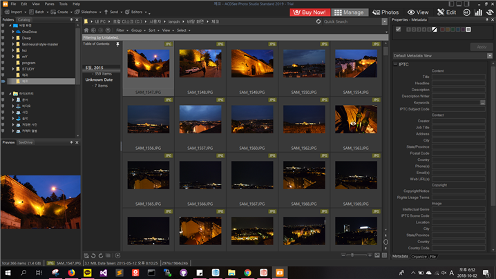
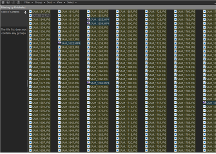
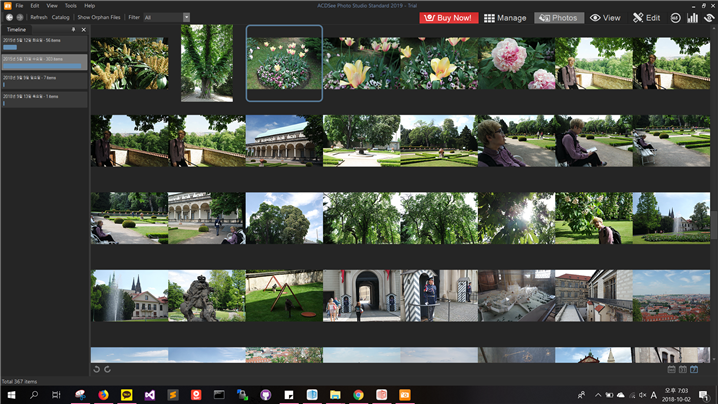
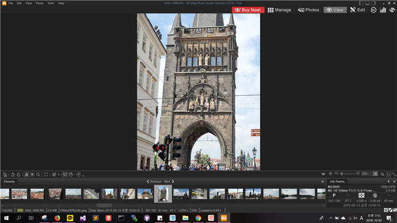
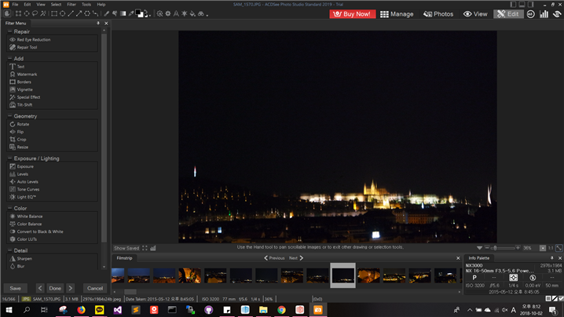
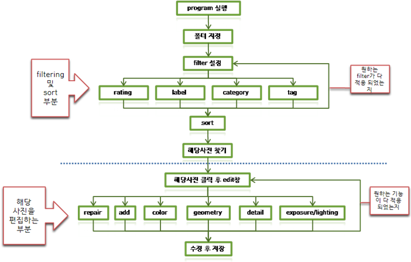
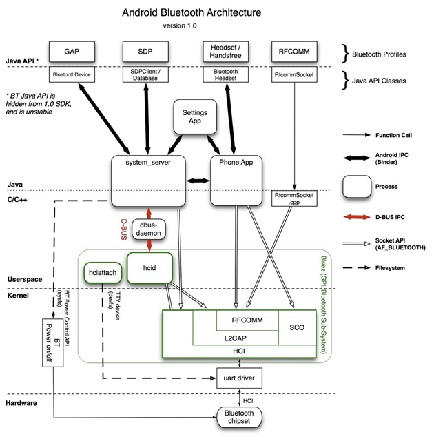

1. photo organizing software interface review
- 이 과제를 수행하기 위해 해당 페이지에 최상위로 랭크된 ACDSee라는 프로그램을 선택하였고, 이 프로그램의 interface를 분석하고자 하였다.
1)시작화면(manage)

위 화면은 ACDSee 프로그램을 처음 실행 시켰을 때 나오는 화면이다. 설정을 바탕화면에 특정 폴더로 설정을 해서 바로 그 폴더에 있는 사진들이 나열되어 있다.
전체적인 interface 구성 화면을 보면 폴더 관리 화면이 좌측 상단, 이미지 preview사진이 좌측 하단에 위치해있고, 가운데로 사진 목록들이 미리보기 형식으로 나열되어 있다. 이 사진들을 더블 클릭하면 view창으로 넘어가진다. 그리고 menu bar가 크게 네 부분이 있는데, 첫 부분은 가장 위 칸에 위치한 file edit 등등 파일들 및 도구, 도움말들을 확인할 수 있는 menubar가 위치해 있고, 그 바로 아래에 파일들을 import해오거나 send, 새로운 슬라이드 쇼 생성 등등의 기능들이 있다. 그 아래 폴더 관리 화면 옆에 나열되어 있는 사진들을 정렬 및 필터링할 수 있는 기능들이 있고, 좌측 상단에 manage, photo, view, edit등 사진들을 관리, 사진 보기, 이를 편집할 수 있는 화면으로 바로 넘어 갈 수 있게 해놓았다. 마지막으로 우측에는 지금 선택되어 있는 사진의 정보를 볼 수 있다.
1*) 분석
처음 화면이 manage창으로 설정되어 있는 것은 interface적으로 좋은 것 같다. 왜냐하면 사진을 preview할 수 있는 점, grid형태로 되어 있어 보기도 편하고 각각의 사진에 tag or label을 붙여 놓으면 그대로 filtering도 가능하여 보고 싶은 사진만을 먼저 filtering하여 찾아 볼 수도 있고, 다른 형식으로 사진을 보고 싶을 때에도 thumbnail 미리보기 형식, icon형식, list형식 등으로 수정해서 보고싶은 양만큼, 형식으로 볼 수 있고, 원하는 사진을 클릭하여 수정하거나 더 크게 볼 수도 있다. 또한 사진을 새로 넣었을 때에도 해당 사진에 대해 클릭 한 번으로 왼쪽 칸의 상세정보를 보고 수정할 수 있으므로 photo organization을 하려는 사람들에게 좋은 선택의 interface라고 생각한다. 또한 사진을 왼쪽 위 menu bar를 통해 다른 기기에서 사진을 불러오기도 편하고, 다른 파일로 수정하기도 쉬우며 바로 슬라이드 쇼를 띄울 수도 있다. 왼쪽 폴더 검색 칸도 보통의 프로그램들은 왼쪽 칸에 탐색기 비슷한 기능을 띄우기 때문에 익숙해서 사용하기도 편한 것 같다. 아래의 프리뷰는 사진의 미리보기 기능을 제공하는데 막상 위의 시작화면에서는 필요가 없어 보이지만 manage항목에서 다른 방법으로 보기에서 아래 사진과 같은 식으로 보기를 한다면 preview는 굉장히 유용한 기능이 될 것 같고, 빈 곳에 배치를 잘 해둔 것 같다. 만약 오른쪽 아래에 배치를 해두었다면, 사진에 대한 정보가 생각보다 많아서 이를 불편하게 아래까지 내려가서 찾아야하는 불편함이 있을 수도 있다고 생각하였다. 마지막으로 아쉬운 점은 가장 잘 보여야 하는 manage, photos, view, edit 바가 오른쪽 상단에 위치하여 보통 메뉴를 찾을 때에는 왼쪽부터 찾기 때문에 프로그램에 익숙치않을 때에는 살짝 헤멜 수도 있다는 생각을 하였다.

2) PHOTOS

Photos 화면에서는 사진을 더 직관적으로 볼 수 있게 구성되어 있다. 구성은 manage에서 가운데 화면과 비슷하지만, grid가 안보이게 바뀌었고, 좀 더 정렬하는 법을 timeline이라는 왼쪽 menu를 통해 볼 수 있게 바뀌었다. 특이한 점은 timeline 바로 위에 있는 화살표를 누르면 이를 년, 월, 일 단위로 바꿀 수 있게 해놓았다는 점이다. manage와 마찬가지로 사진을 더블클릭하면 view창으로 넘어간다.
2*) 분석
photo창은 manage창에서는 폴더 단위로 사진을 볼 수 있지만, 현재 불러온 모든 폴더의 photo를 한꺼번에 볼 수 있는 곳이다. 날짜 기준으로 다 정리되어 있는데, 모든 폴더의 photo를 볼 수 있다는 장점이 있다. 하지만, 보통 사진을 검색할 때 폴더별로 검색하거나, 태그, label이 붙여진 경우에 그 기준으로 확인하는 경우가 많다고 생각하여 주로 사용하지는 않을 창인 것 같다. timeline 배치 위치, 날짜 별로 정렬되어 있다는 점이 manage 창과 다르게 깔끔하게 구성되어 있지만, 크게 필요 없는 창이라고 생각하였다.
3) VIEW

VIEW창의 화면은 위와 같다. manage창 photos창에서 각각의 사진을 더블클릭 하거나 오른쪽 키를 통해서 넘어올 수 있다. 크게 가운데에 사진 한장을 자세히 볼 수 있게 되어있고, 아래 아이콘 바를 통해서 좌로 회전, 우로 회전, 색조변경, 축소/확대 등의 간단한 기능을 수행 할 수 있다. 그 아래에 슬라이드 형식으로 사진을 다 확인 할 수 있게 하였으며, 왼쪽 아래 작은 칸으로 image정보를 확인 할 수 있게 구성되어 있다.
3*) 분석
view창은 사진 하나만 간단하게 크게 볼 수 있게 만든 창이다. 그래서 가운데에 사진이 크게 확대되어 있고, 여기에서 간단한 편집 기능만을 넣은 것 같다. 사진 바로아래에 이러한 간단한 기능들이 그려진 아이콘들이 있는데 이런식으로 아래에다가 둔 것이 위에 두는 것 보다 보기에 편해서 좋은 것 같다. 그리고 각각의 아이콘들이 명확하게 어떤 기능을 하는지 대부분 알 수 있어 아이콘 설정도 잘한 것 같다. 하지만 살짝 아쉬운 점이 이 아이콘들이 가운데로 정렬되어 있으면 좀더 찾기 쉽지 않았을까 생각을 하였다. 물론 크게 신경 쓰이는 부분은 아니다. 그리고 사진이 목록 형식으로 되어있는 것 보다 슬라이드 형식으로 해둔 것이 확인하기 편하고, 아래가 높이가 작은 칸이기 때문에 위아래로 내리다가 애매한 위치에 놓여있는 것보다 이런 슬라이드로 되어 있는게 더 깔끔해 보였다. 그리고 주위에 있는 사진들도 더 찾기 쉽다고 판단하였다.
4) EDIT 창

edit창은 view창과 크게 다른 점이 없다. 추가된 부분이라면 왼쪽 filter menu에서 여러 가지 자세한 이미지 수정 기능들이 제공되고 그 위에 블록설정, 움직이기 등의 아이콘이 있다. 각각의 기능들 옆에는 작은 아이콘이 있어서 좀 더 이해하기 쉽게 되어 있으며, 하나의 기능을 누르면 해당 기능의 자세한 설정을 할 수 있고, 이를 설정할 부분을 색칠하거나 바로 변경되는 형식이다.
4*) 분석
큰 인터페이스는 view부분과 비슷하고, 왼쪽의 filter menu에 각각의 기능 옆에 아이콘을 배치한 것이 글로만 존재하는 기능들을 나열 하는 것보다 좀 더 직관적이어서 좋은 배치인 것 같다. 또한 자주 쓰는 기능들은 상단의 menu bar에 고정시켜 놓고 세세한 기능들은 모두 왼쪽으로 빼둔 것이 더 user를 생각한 interface 구성이지 않나 싶다.
2. photo organization program decision tree

3. GOMS method
1) 상황
- 나는 label 설정이 다 되어있는 사진파일들을 해당 폴더에서 red label이 붙어있는 맥주 사진의 밝기를 좀 더 밝게 하려고 한다.
2) KLM Operators time 계산
- 해당 폴더로 포인터 옮기기 - 1100
- 포인터 클릭 - 200
- 필터로 포인터 옮기기 - 1100
- 필터 클릭 - 200
- red로 포인터 옮기기 - 1100
- red 클릭 - 200
- response wait - 900
- 가운데 사진 목록으로 포인터 옮기기 - 1100
- 클릭 - 200
- 해당사진 찾기 - 1000
- 해당 사진으로 포인터 옮기기 - 1100
- 해당 사진 클릭 - 200
- edit로 포인터 옮기기 - 1100
- edit 클릭 - 200
- response wait - 1900
- 왼쪽 칸의 exposure 칸으로 이동 - 1100
- exposure 클릭 - 200
- response wait - 1500
- exposure 알맞게 올리기 - 1500
- 왼쪽 하단 apply로 포인터 옮기기 - 1100
- apply 클릭 - 200
- response wait - 500
- done 클릭 - 200
- response wait - 500
- 왼쪽 상단 file로 포인터 옮기기 - 1100
- file 클릭 - 200
- save로 포인터 옮기기 - 1100
- save 클릭 - 800
=>총 216000ms
3) 실제 수행 시간
- 204000ms
4. galaxy note 9 s pen analysis
2018년 8월 24일 galaxy note 9이 정식 출시되었다고 한다. 이번에 새로 나온 galaxy는 하드웨어적인 사양은 큰 차이가 없으나, s-pen에 bluetooth 기능을 탑재하여 새로운 기능을 추가하였다고 한다. 이 기능은 카메라, powerpoint slide 넘기기 같은 어플리케이션을 제어하는 일종의 리모컨 역할을 하게 한다고 한다.

출처
http://arsviator.blogspot.com/2010/05/%EC%95%88%EB%93%9C%EB%A1%9C%EC%9D%B4%EB%93%9C-%EB%B8%94%EB%A3%A8%ED%88%AC%EC%8A%A4-%ED%94%84%EB%A1%9C%EA%B7%B8%EB%9E%98%EB%B0%8D-bluewatch-project-2.html
위의 도식도와 같이 bluetooth 통신기기와 phone과의 통신을 할 때에는, 초기 설정은 bluetooth api를 통해 서로 권한을 받고 이를 입력으로 받아들인다. 입력 권한을 받았다면 phone에서 listen 상태가 되어있는데, 이때에 s-pen은 클릭 등의 입력을 통해 어플리케이션 제어를 한다. 하지만 phone에 직접 flip하거나 touch하는 것은 bluetooth기능이 아닌 EMR방식을 사용하고 있다고 한다. 이는 디스플레이 안에 별도의 자기장 패널을 내장하여 자기장을 발생시켜 펜에 전기에너지를 공급해 서로의 interaction을 통해 입력을 주고받는 것이다.